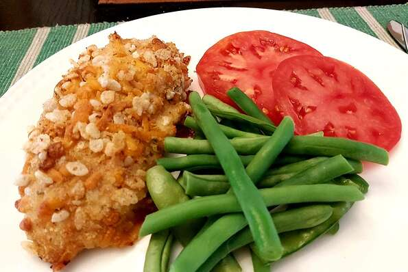

Cheddar Baked Chicken

This simple dish requires minimal prep and results in a savory, filling meal for 2-3 people, or for 1 person with leftovers!
Once you've explored this recipe, try substituting cheese types or using different starches, like panko or potato chips!
Ingredients
- 1/4 Cup + 2 Tablespoons Butter, Melted
- 1/2 Cup All Purpose Flour
- Salt (To Taste)
- Fresh Ground Black Pepper (To Taste)
- 1 Teaspoon Garlic Powder
- 1 Large Egg
- 1 Tablespoon Milk (Whole or 2%)
- 1 Cup Shredded Cheddar Cheese
- 1/2 Cup Italian Seasoned Bread Crumbs
- 1 Cup Crispy Rice Cereal
- 3 Skinless, Boneless Chicken Breast Halves - Cut In Half
Steps
- Preheat oven to 350 degrees F (175 degrees C).
- Coat a medium sized baking dish with 1/4 cup melted butter.
- In a bowl, mix the flour, salt, pepper, and garlic powder.
- In a separate bowl, beat together the egg and milk.
- In a third bowl, mix the cheese, bread crumbs, and cereal.
- Dredge chicken pieces in the flour mixture, dip in the egg mixture, then press into the breadcrumb mixture to coat.
- Arrange in the prepared baking dish.
- Drizzle remaining 2 tablespoons of butter evenly over chicken.
- Bake 35 minutes, or until coating is golden brown and a proble thermometer placed in the center of the thickest part of the chicken reads at 165F/75C. Juice from the chicken should run clear.
- Rest chicken for 5-10 minutes, then serve.